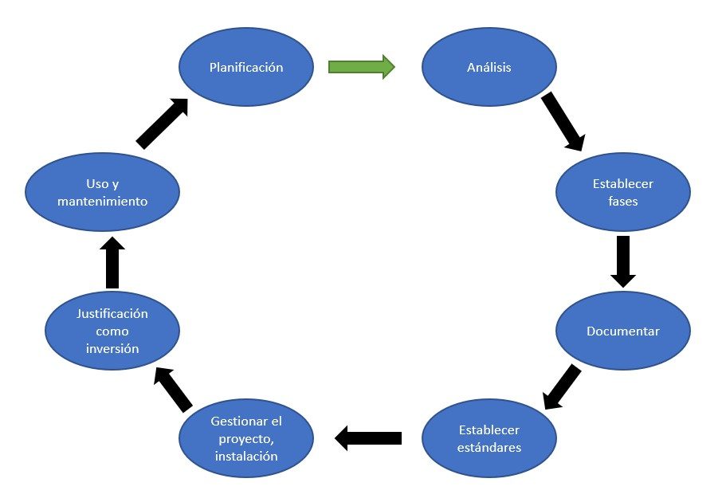

El ciclo de vida de los datos, como su nombre lo indica se puede represantar de manera cíclcia, es decir que siempre esta en constante cambio, o por lo menos así debería serlo. El cilo está compuesto de la siguiente manera:
Involucrar a los usuarios del sistema para recoger, introducir, transformar y almacenar datos e información.
Utilizar una estrategia de resolución de problemas del negocio, e introducir nuevas restricciones.
Genrealmente las fases se agrupan en 4 grandes grupos:
La documentación debe ser un producto del trabajo diario de los implicados en el desarrollo del sistema de información.
LSe deben desarrollar estándares para la arquitectura de la tecnología de la organización, para que todos los sistemas de información se puedan integrar entrre sí.
Es importante al momento de desarrollar un sistema de información y seguir una planificación detallada. En esta fase se desarrolla la implementación del sistema .
Los directivos son los encargados de asignar los recursos disponibles, el desarrollo de un sistema de información es en relación costo-beneficio más costoso que otros proyectos de la empresa.
Por mucho, esta es la etapa más importante y comprende los siguientes elementos